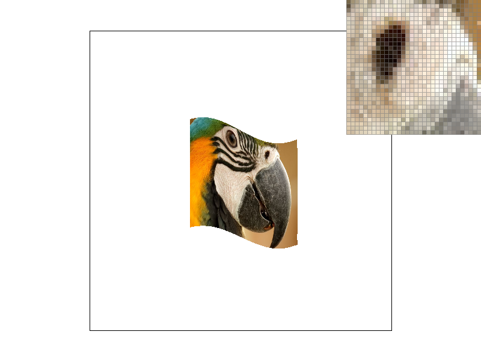
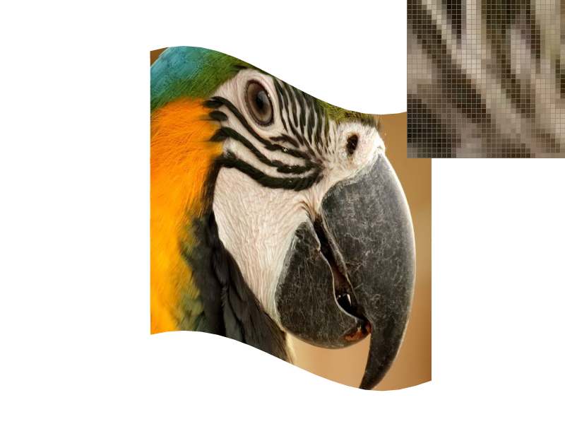
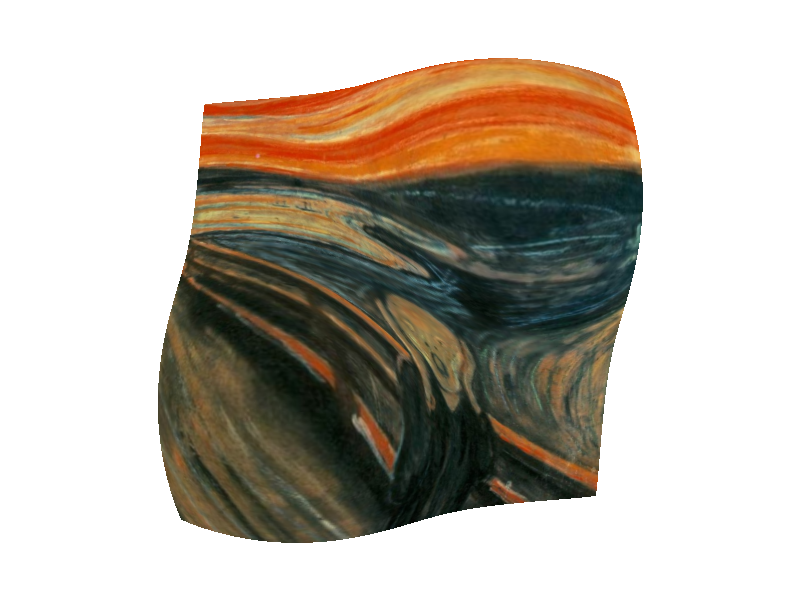

CS184/284A Spring 2025 Homework 1 Write-Up
Link to webpage: leov974.github.io/hw1.html
Link to GitHub repository: github.com/cal-cs184-student/sp25-hw1-leyo

Overview
In this project, I developed a rasterizer that renders images from SVG files, where triangles serve as the fundamental building blocks. The implementation focused on three essential functionalities: Supersampling for anti-aliasing, Barycentric Coordinate Interpolation for smooth gradient coloring, and Texture Mapping enhanced by mipmaps and bilinear filtering for high-quality texturing. Supersampling directly tackles aliasing, smoothing out jagged edges to produce cleaner, more visually appealing images. Barycentric coordinates allow for precise interpolation across triangles, enabling the creation of smooth color gradients and more natural shading. Texture mapping leverages mipmaps to efficiently manage different levels of detail and uses bilinear interpolation to blend texels for a refined, anti-aliased texture application. Overall, this project was a lot of fun. Tweaking the three essential functionalities provided clear visual confirmation that my implementation was correct. It introduced me to a new form of debugging (visual debugging), and it made me appreciate more what's behind everyday images and video games.Task 1: Drawing Single-Color Triangles
Rasterization of a triangle is the process of converting a triangle's continuous representation in a 2D coordinate space into discrete pixels on a screen or a grid. For three provided coordinate vertices and a color, this involves determining which pixels lie inside the triangle and coloring them accordingly.
To rasterize a triangle, there are a few steps:
- Calculate the winding order via the cross product between the vectors formed by the differences of vertices. Based on whether this is positive or negative you know by the right hand rule whether the winding order is clockwise or counterclockwise. We can force the winding order to be counterclockwise by changing the vertices order.
- Next, find the integer bounding box by picking the minimum and maximum of the \(x,y\) coordinates and flooring or ceiling them to get an integer-valued box enclosing the triangle.
- Loop over the bounding box at each sample point, perform three edge tests to determine whether the point lies inside the triangle. Using the line equation, check if all three edge tests yield values \(\geq 0\), then combine the results with a logical "AND" operation.
- If the sample point is inside then we fill the pixel with the corresponding color otherwise not
Note: This algorithm is no less efficient than one that checks each sample within the bounding box of the triangle, as it follows the same approach just rounded to the nearest integer

Task 2: Antialiasing by Supersampling
Supersampling is a technique used to reduce aliasing by sampling each pixel multiple times at subpixel locations. In our implementation, the number of samples per pixel is controlled by the sample_rate parameter. For example, if sample_rate is set to 4, then a 2x2 grid of subpixel sample locations is used within each pixel. The final pixel color is computed by averaging these subpixel samples, which results in smoother triangle edges.
Instead of drawing directly to the framebuffer as in Task 1, the triangle rasterization is performed into a higher-resolution sample buffer. The sample buffer, stored as a vector of Color objects, acts as a temporary high-resolution framebuffer. As triangles are rasterized, for each supersample, the algorithm determines whether the sample lies inside the triangle. If it does, the corresponding sample in the buffer is set to the triangle's color. Once the sample buffer has been fully rasterized, we “resolve” or downsample the high-resolution buffer to produce the output image. For each pixel in the output framebuffer, the algorithm averages the colors of all its associated supersamples. This averaging process smooths the color transitions along triangle edges, reducing jagged artifacts seen in Task 1 and producing a cleaner, antialiased output. Also note that points and lines are not inherently supersampled. However, to maintain consistency in rendering, these primitives are drawn into the sample buffer by filling all the subsamples corresponding to an affected pixel with the same color. This ensures that when the supersample buffer is resolved, points and lines appear correctly without additional antialiasing computations.

|

|

|

|
As we can see with higher sampler rate there are less jaggies. This effect can be understood through frequency analysis. When using only one sample per pixel, the highest accurate representable frequency is \(1/2\) cycles per pixel (Nyquist frequency), half the sampling rate by the Nyquist Theorem. However, the sharp edges in a scene contain high-frequency components that exceed this limit, leading to aliasing artifacts. Supersampling helps mitigate this by averaging multiple samples within each pixel, effectively suppressing the high-frequency components and creating a more gradual transition in color. This smooths out the discontinuities that cause jaggies, producing a cleaner and more visually appealing result.
Task 3: Transforms

|

|
For this task, I wanted to create a character inspired by a fun cultural reference. My Russian friend suggested I depict someone doing the classic 'gopnik' squat, holding a Russian flag, and wearing a traditional Russian hat. I used a combination of the three fundamental transformations: rotation, translation, and scaling, applied to basic triangles to construct something loosely resembling the reference.
Task 4: Barycentric coordinates
Barycentric coordinates is a different way to represent a point by a linear combination of three triangle vertices. The weights in the linear combination which are the barycentric coordinates act like a weighted average telling how much each vertex can influence a point. For interpolating tasks such as color gradients and lighting they can be very useful. Below I colored three vertices of a triangle red, green, and blue and via the barycentric coordinates a smoothly gradient colored triangle was drawn.

Task 5: "Pixel sampling" for texture mapping
Pixel sampling is the process of determining which color value from a texture image should be used to color a pixel when texture mapping a surface. The triangle's surface is textured by mapping texture coordinates \((u,v)\) from the triangle's vertices onto every pixel inside the triangle. For every pixel, we compute its barycentric coordinates relative to the triangle vertices, then use those coordinates to interpolate the texture coordinates (u,v) at that pixel. This (u,v) indicates where in the texture image (stored at full resolution in mipmap level 0) the corresponding color should be sampled. As for implememntation like the other rasterize_triangle methods we iterate over the sample points but now compute the barycentric coordinates to then use the alpha, beta, gamma weights to find the \((u,v)\) texture coordinates. Then we either use nearest neighbor sampling which provides a fast but rough rounded approximation, or bilinear sampling which achieves smoother transitions and improved visual quality via a weighted average of neighboring texels.
Here are small frame screenshots for viewing a large pixel space and large frame screenshots for viewing a small pixel space.
|
|
|
|

|
|
|
|

|
|
|
|
In the example photos above bilinear sampling is a clear improvement particularly along curved and diagonal edges. Due to abrupt texel changes nearest-neighbor sampling suffers from noticeable jaggies. While increasing the sampling rate did help the inherent lack of weighted average blending remains evident. By contrast, bilinear sampling blends adjacent texels yielding a more natural gradient even only at a sampling rate of 1. The large differences between the two methods are most notable in high frequency areas i.e. where there is a rapid change in texture color or detail, or simply edjes and diagonals.
Task 6: "Level Sampling" with mipmaps for texture mapping
Level sampling is a technique used in texture mapping to determine the appropriate level of detail when applying a texture to a surface. It addresses the challenge of minification, where a single pixel on the screen corresponds to multiple texels, potentially leading to aliasing artifacts. By utilizing mipmaps precomputed collections of downsampled textures which only requires 4/3 times as much memory space, level sampling selects the most suitable mipmap level to provide coherent and visually accurate textures enhancing rendering performance and visual quality. In terms of implementation based on the chosen level sampling method we compute partial derivatives, to then find texture-dimension-scaled difference vectors which help to compute an estimate on the pixel's footprint (area) in texture space. Based on the chosen level sampling method we can just round the level or lerp it with the two closest levels. The rest of the implementation is similar to other tasks where we just loop over pixel space and fill the buffer with the color corresponding to what the texture sampling process returns.
In terms of tradeoffs simpler methods like using P_NEAREST with L_ZERO are easier to implement because they always sample from the full-resolution texture without any level interpolation. However, when you sample directly from a high-resolution image you end up processing a lot more texels per screen pixel, especially during minification. This extra texel processing can actually slow down the rendering. On the other hand, more advanced methods (such as L_NEAREST or L_LINEAR) compute the appropriate mipmap level based on the pixel's footprint in texture space. Since these methods sample from a lower-resolution mipmap level when appropriate, they process fewer texels. This reduction in texel processing can lead to significant computational speedups and improved performance, even though the implementation is more complex.
Also, advanced sampling techniques like trilinear filtering (P_LINEAR with L_LINEAR) offer superior antialiasing by smoothly interpolating between texels and mipmap levels. In contrast, simpler methods may lead to noticeable artifacts, especially when textures are minified or viewed at oblique angles.
I decided to do The Scream by Edvard Munch. As shown below L_NEAREST demonstrates significant rendering improvements via antialiasing.
|
|
|
|
|

|